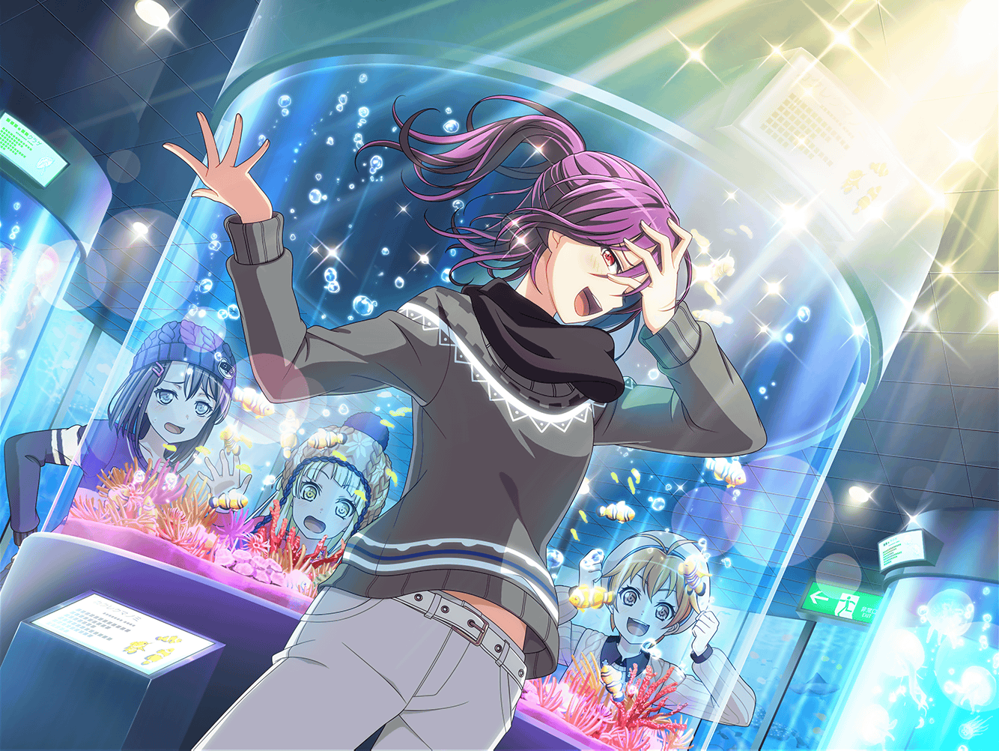

水族館 館内
はぐみ
かのちゃん先輩！
ペンギンをおウチに返せてよかったねー
花音
うん、本当にみんなのおかげだよ
美咲
それじゃあ、帰りはこっちから行きましょう
こころ
いいわね！ イルカのいる水槽を通って帰るのね！
美咲
まー、もともとはイルカを見に来たわけだし、
せっかくここまで来たんだから見て帰ろうよ
薫
そうだね、美咲の言葉に私は賛成するよ
はぐみ
はぐみも行きたーい！
美咲
ただ、これだけは言っておくけど、
水族館の中ではあんまり騒いじゃダメだから。
特に、こころ……いいね？
こころ
もちろん平気よ！
美咲
……ホントかなぁ
薫
ははは。
美咲が心配するのも無理はないね。
こころはいつも元気だからね
美咲
薫さんも、結構心配なんだけど……
花音
美咲ちゃん。
イルカさんがいるのって、どの辺かな？
美咲
はい。
それじゃあ行きましょうか
薫
ようやくイルカとご対面だね。楽しみだよ
美咲
イルカの水槽はこの先にあるけど……
薫
それにしても水の中の生き物は、
どれもとても神秘的だね
こころ
わー、とっても大きいカニがいるわ！
食べたら美味しそうね！
美咲
ここでは絶対に言っちゃダメ
薫
…………あ、あれは
美咲
ん？ 薫さん？
……どうしたの？
薫
……は、儚い
美咲
ちょ、ちょっと！
いきなり走り出して、何があったの！？
薫
な、なんという……
美咲
薫さん、突然どうしたの？
薫
見てごらん、美咲……
この水槽を……
美咲
この水槽？
ここに何がいるんですか？
薫
とても、儚い……美咲、君にはわかるかい、この儚さ……
美咲
えーと……
『カクレクマノミ』って書いてあるけど？
薫
そう、カクレクマノミ……
彼らはとても儚い生き物なんだよ……
美咲
……え？ 儚い……？
ど、どうしてそうなるの？
はぐみ
2人とも来ないから戻って来ちゃったよ。
……って、あ！
これ、カクレクマノミだ！
こころ
カクレクマノミ……？
これが、そうなの？ とてもかわいい色をしてるわ！
花音
わー、目がクリクリしてて、なんかかわいいね
美咲
け、けど……
これの何が儚いの？
薫
ちゃんと見るんだ、この子たちを！
表情豊かな顔に、そしてこのカラフルなボディ……
薫
それに、カクレクマノミは天敵から身を守るために、
こうして常にイソギンチャクの中に隠れている、
弱く儚い生き物なんだ
美咲
そんな性質があったんだ……
初めて知りました
こころ
でも、カクレクマノミは、イソギンチャクと
楽しく暮らしてるんだわ！
きっと、カクレクマノミだって幸せよ！
薫
こ、こころ……！
その考え方、とてもステキだね
美咲
ていうか、２人とも、いつまでそこにいるの？
美咲
早くイルカを見に行こうよ。
それが目的で来たんでしょ？
薫
そうだったね、すまない。
つい夢中になってしまっていたよ
薫
本当はずっと見ていたいが……
これも運命……わかった、行こう
花音
でも、薫さんがカクレクマノミのことに
あんなに詳しいなんて……
ちょっと意外だったな
こころ
人にはいろんな一面があるのよ！
薫がカクレクマノミが好きなことだって、
全然ヘンじゃないわ！
美咲
はいはい、その話はもういいから。
先へ行きますよー